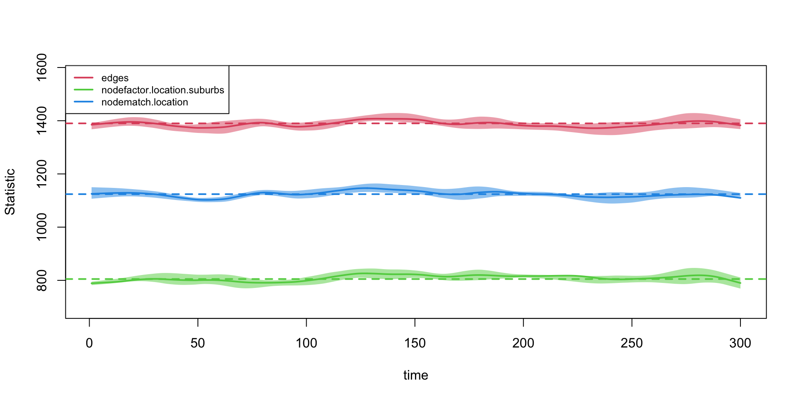
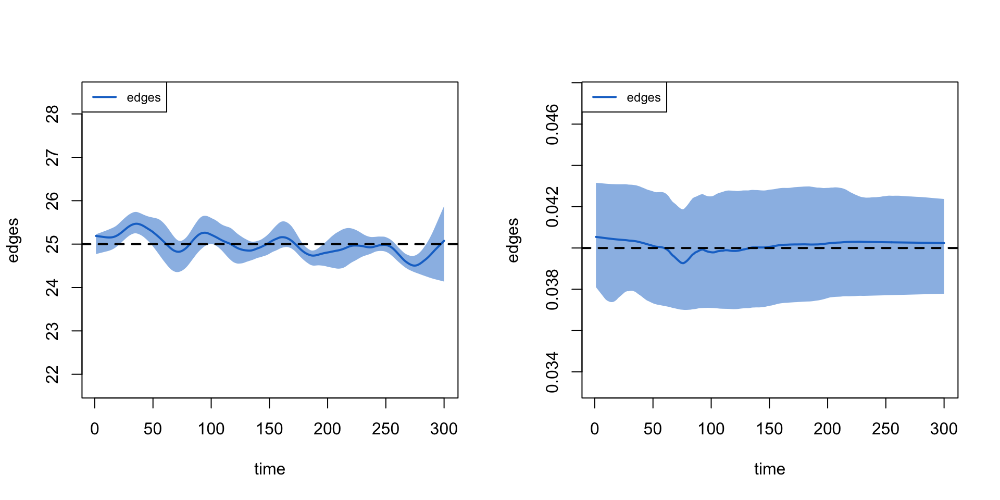

W13. Network Diffusion
Network Diffusion
- Cover dynamic epidemiological models of diffusion
- Apply the model to simulate a case of infection spread through a risk network
- How much does the epidemic potential decrease if the number of current partners decreases dramatically?
Reading in Data
- Specify
- one related to the formation and breaking of network ties
- one related to the spread of an infection through the network
Reading in Data
- No exact edgelist
- Use a faux ego network data set drawn from an at-risk population of drug users
degree= number of current drug partners for ego
ids location degree location1 location2 location3
1 1 city 1 city <NA> <NA>
2 2 city 9 city suburbs city
3 3 city 2 city city <NA>
4 4 city 2 city city <NA>
5 5 city 5 city city city
6 6 city 5 city suburbs citySpecifying the Network Model
- Let’s see how many people are in the sample:
Specifying the Network Model
- Create an empty, undirected network of size
num_nodes
Specifying the Network Model
- Add some node attributes, based on the values seen in the observed data
Network attributes:
vertices = 750
directed = FALSE
hyper = FALSE
loops = FALSE
multiple = FALSE
bipartite = FALSE
total edges= 0
missing edges= 0
non-missing edges= 0
Vertex attribute names:
location vertex.names
No edge attributesSpecifying the Network Model
- Construct a simulated network based on the information we have
- Specify a model that determines how ties form and break within the simulation
- With tie formation formula (same kinds of terms used in the ERGM)
Calculate the Target Statistics
- Set the target statistics for each term in the formula(
nodefactor("location"),nodematch("location"))- Set the number of edges
- Use the mean degree in the ego network data
Calculate the Target Statistics
- Calculate the term
edge- Take the mean degree, multiply it by the number of nodes
- Divide it by 2 as the network is undirected to get the total number of edges
Calculate the Target Statistics
- Calculate the term
nodefactor("location")- Total number of ties emanating from one group.
- the mean degree of the group * the number of people in that group
Calculate the Target Statistics
- Check a simple table on location to see how many are in the city versus the suburbs
Calculate the Target Statistics
- Total number of edges for each group * the mean degree for each group by the size of each group
Calculate the Target Statistics
- Calculate the term
nodematch("location")- The proportion of ego-alter pairs where ego and alter are in the same location
- Take the proportion and multiply it by the total number of edges in the network
Calculate the Target Statistics
- See what proportion of ego-alter pairs match on location
- Do a simple table on the data frame constructed above
Calculate the Target Statistics
- Take the proportion matching and multiply it by the total number of edges in the desired network
Calculate the Target Statistics
- Put together the target statistics into one input vector.
Set Rules for Network Dissolution
- Specify a model that will dictate how edges are dropped over time
Dissolution Coefficients
=======================
Dissolution Model: ~offset(edges)
Target Statistics: 25
Crude Coefficient: 3.178054
Mortality/Exit Rate: 0.001
Adjusted Coefficient: 3.229321Estimating the Network Model
netest(): wrapper for theergm()andtergm()functions
# nw = network object used as basis for simulation
# formation = formula specifying formation of edges
# target.stats = input target statistics corresponding to formation formula
# coefs.diss = coefficients for dissolution of edges
set.seed(1002)
net_mod <- netest(nw = epi_network, formation = formation_formula,
target.stats = target_statistics_baseline,
coef.diss = dissolution_coefs)
summary(net_mod)Estimating the Network Model
- See if the model is producing networks that match the target statistics
netdx()function will simulate networks from the estimated model and compare the statistics from the simulated networks to the input target statistics
Estimating the Network Model

Estimating the Network Model
- Let’s look at the target statistics when we allow ties to dissolve and form over time
Estimating the Network Model
Estimating the Network Model
Specifying the Epidemic Model
- Identify how the infection spreads through social connections
- EpiModel allows for a flexible range of models to be specified
Specifying the Epidemic Model
- Feed this vector of initial states to the
init.net()function, with status.vector set to the vector of initial states.
Specifying the Epidemic Model
- Go ahead and set the probabilities of infection and recovery using a
param.net()function
# inf.prob = the probability of infection in a given interaction (or act)
# act.rate = number of interactions (or acts) in a time period between i and j, assuming that i and j are connected in that period.
# rec.rate = the rate of recovery in a time period
input_to_episim <- param.net(inf.prob = 0.025, act.rate = 1, rec.rate = 0.01)
input_to_episimFixed Parameters
---------------------------
inf.prob = 0.025
act.rate = 1
rec.rate = 0.01Specifying the Epidemic Model
- Create an object that controls the simulation itself
- Type to “SIS”, have a simulation with 300 time periods, do the simulation 4 times and run it over 2 processors
Network Model Control Settings
===============================
type = SIS
nsteps = 300
start = 1
nsims = 4
ncores = 2
resimulate.network = FALSE
tergmLite = FALSE
cumulative.edgelist = FALSE
truncate.el.cuml = 0
module.order =
save.nwstats = TRUE
nwstats.formula = formation
save.transmat = TRUE
save.run = FALSE
save.cumulative.edgelist = FALSE
verbose = TRUE
verbose.int = 1
skip.check = FALSE
raw.output = FALSE
tergmLite.track.duration = FALSE
save.diss.stats = TRUE
attr.rules = <list>
save.network = TRUE
Dynamic Modules: resim_nets.FUN summary_nets.FUN infection.FUN recovery.FUN departures.FUN arrivals.FUN nwupdate.FUN prevalence.FUNRunning Simulations
- Run our epidemiological simulation using the
netsim()function. The main arguments are:- x = fitted network model, based on
netest()function - param = model parameters, based on
param.net()function - init = initial status inputs, based on
init.net()function - control = control object, based on
control.net()function
- x = fitted network model, based on
Running Simulations
- Quick summary on the simulation object
time s.num i.num num si.flow is.flow
1 1 727.00 23.00 750 NaN NaN
2 2 726.50 23.50 750 1.25 0.75
3 3 724.25 25.75 750 2.75 0.50
4 4 722.50 27.50 750 2.00 0.25
5 5 720.75 29.25 750 2.25 0.50
6 6 718.75 31.25 750 2.25 0.25Running Simulations
- Quick summary on the simulation object, at time 100
EpiModel Summary
=======================
Model class: netsim
Simulation Details
-----------------------
Model type: SIS
No. simulations: 4
No. time steps: 300
No. NW groups: 1
Model Statistics
------------------------------
Time: 100
------------------------------
mean sd pct
Suscept. 125.25 5.909 0.167
Infect. 624.75 5.909 0.833
Total 750.00 0.000 1.000
S -> I 7.75 2.062 NA
I -> S 5.75 0.500 NA
------------------------------ Running Simulations
- Plot the number of infected and susceptible over time

Done!
- Please check KLMS for the assignment of this week(til Friday)
- If you want to study in-depth knowledge for epidemic models of network, please check this week [Option] in the assignment